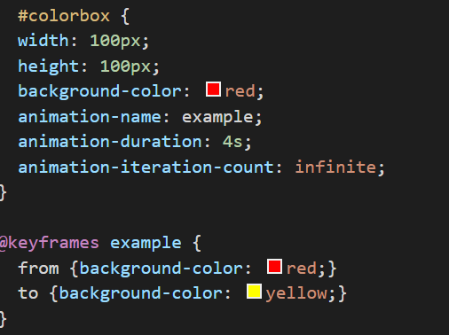

Now that we have gone Over what html is, how it works and show a few examples of how it works. Now It time to discuss the next important part of all webpages CSS.
what is CSS?
CSS stand for Cascading Style Sheets. Just like Html is also an text file that contain a set of selectors and adtributes to add "styling" to any page as the developer sees fit.
How does CSS work?
CSS uses "selectors" to identifiy a element in a page. You can select and element by its tagname, its id name and class name.
examples:
| html element | selector + some adtribues |
|---|---|
| <p> | p{ color:red; text-alaign:center; } |
| <p class = "para1"> | .para1{ color:red; text-alaign:center; } |
| <p id = "line1"> | #line1{ color:red; text-alaign:center; } |
It's ok that you don't understand what the atributes are doing at the moment, we will get to that soon, this example is to show how to use CSS selectors to "tell" the browser what element(s) to add these atributes to them.
The attributes are what tell the web browser of choice what is the color of the page, the font of the text
if the background is set to be a static image, the size or location of a element on screen etc.
All webpages these days have heavy use of CSS because of the customizability it gives the developer to create their own unquie looking
site. This page you are viewing is using some CSS to keep the page from looking balnd and uninspired.
here is a link to a demo page that lacks CSS
Css Animation
Css can also be used to create animated elements on your web pages. some of these can be as simple as chaning the color of a box on screen
Even though this may seem simple it a good entry point into explaing how css animation works. 
The image above is the CSS to create the color changing box in the example above. In the colorbox "call" we made we set the height and width of the element to 100px (100 pixels) and fill it with the background-color with red. Now we added a new CSS attribute:value pair wen havent seen yet Animation-name, animation-duration and interation-count. Animation-name is self explainorty it tells the browser the name of the animation tied to the element. Animation duration is how long it will take for the animation to complete, setting in to 2 seconds will increase the speed and setting it to 10s will decreased the speed of the animation. Animation-interation-count is how many time you want the animation to repeat it self, in this example we set it to "infinte" which mean the naimation will continously repeat it self.
What you may have notice is the @Keyframes section of the CSS, this is where the animation is defined. First we have to name the animation after we declare @keyframes.
We set the name of this demo to "example" same as the animation in the colorbox css property. Inside the brackets we said from background-color red to background-color yellow
tells browser to transition the color from red into yellow. This is one way to create animates html elements, another way is by using percentages instead of the "from-to" in the example
above.
For this example we'll not only change the color but also move the box around at the same time.
End of the section
With CSS added to your webpages you can create eye ctaching sites, that will certianly attract your user attenion. While a site made with Html and CSS can certainly look good, but if you want to provide a service to your user you will need something to do the background task. This is where JavaScript comes in. There more to CSS than what I Shown here if you want to learn more here's a link to a good starting point CSS
< BackNext JS »